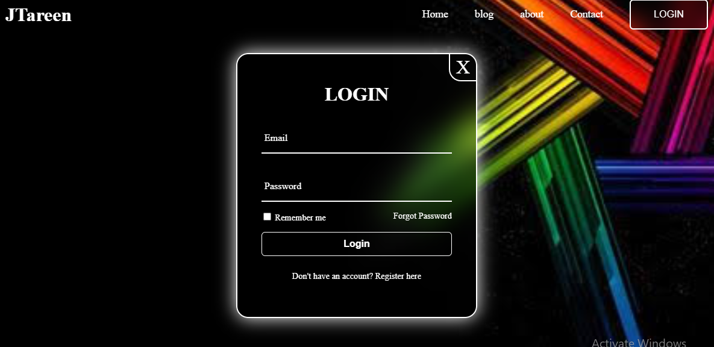
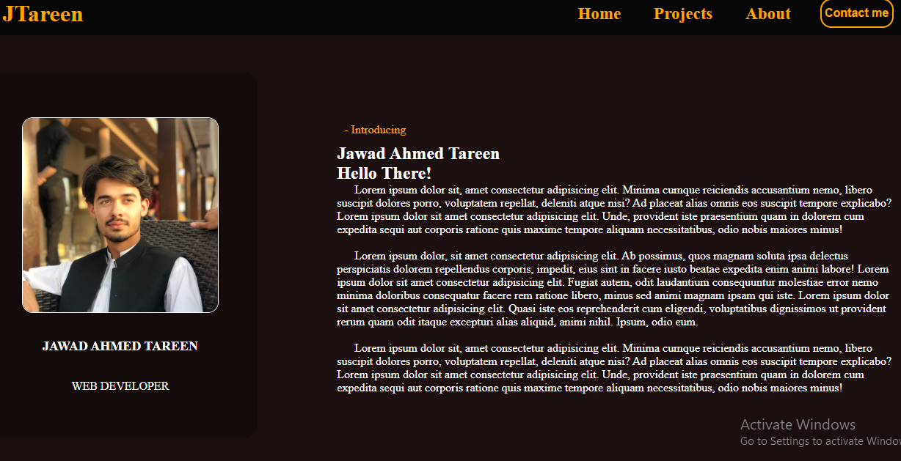

Packman Game
Welcome to my first project, a tribute to classic game Packman. Developed as a university Project, this allowed me to delve into the realm of game development using C++. Drawing my inspiration from the classic game, I embarked my journey to recreate the thrilling experience of navigating a labrinth while avoiding ghosts and devouring those delectable dots. With careful attention to detail, I meticulously crafted the game mechanics, ensuring smooth movement, clever enemy AI, and exciting power-ups. As I immersed myself in the intricacies of C++ programming, I witnessed the game come to life, taking shape as a testament to my dedication and newfound skills. Join me as we relive the nostalgia of Pacman, transported into a world crafted with passion and a desire to bring joy to others.

Login Page
I'm thrilled to share that I've just wrapped up my latest project—a dummy login site that I developed as part of my HTML, CSS, and JavaScript practice! This endeavor has been an incredible opportunity for me to dive into web development and gain hands-on experience. Through this project, I've not only learned how to create visually appealing user interfaces using CSS but also how to add that extra layer of interactivity with JavaScript. I've delved into the world of form handling and input validation, which are crucial skills in web development. This project has undoubtedly paved the way for me to tackle more complex challenges and create even more sophisticated web applications in the future. I'm excited to continue honing my skills and exploring new projects to fuel my growth in the world of web development! Something important to mention, this page is not responsive and designed for dekstop, as at the time of making this page I was still working on responsive design. You can check the next project 'Portfolio site' which is fully responsive

Portfolio Page
I'm absolutely thrilled to showcase my latest accomplishment—a portfolio project that I've poured my heart and soul into! This endeavor allowed me to curate a personalized space on the web where I can exhibit my journey, skills, and achievements. Through this project, I've delved into the intricacies of design, layout, and content creation, all while honing my HTML and CSS skills. Crafting each section of my portfolio was a testament to my growth as a developer, and it's a testament to the countless hours I've dedicated to perfecting my craft. I'm excited to share my passion, aspirations, and projects with the world, and I'm even more eager to see where this journey takes me next! The site is none other than the one you are currently browsing into...
